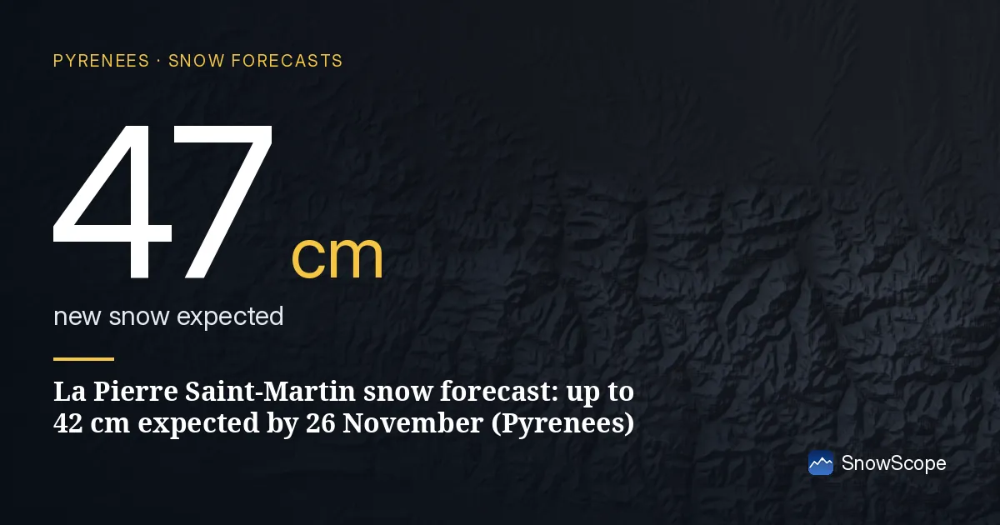
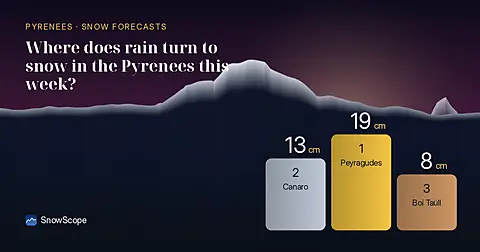
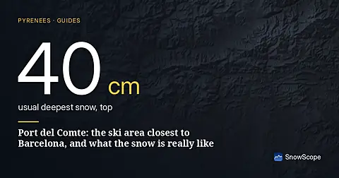
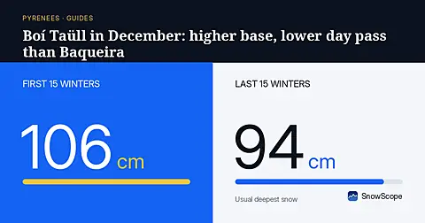

Snow reports · Pyrenees
Pyrenees: On 24 November the freezing level at Astun climbs to 1,960 m to 3,170 m, higher than the top of the lifts (2,272 m): expect rain or wet …
Snow by country today
The whitest countries today: Andorra (61 %), France (20 %) and Spain (5 %).
Most new snow in the week ahead: France (33 cm), Spain (18 cm) and Andorra (18 cm).
Snow today at the main resorts
- Candanchu · 58 cm
- Astun · 57 cm
- Gourette · 56 cm
- Formigal · 54 cm
- La Pierre Saint-Martin · 49 cm
- Gavarnie-Gèdre · 41 cm
- Piau-Engaly · 41 cm
- Luz-Ardiden · 38 cm
- Grand Tourmalet · 33 cm
- Peyragudes · 26 cm
- Saint-Lary · 25 cm
- Aramón Cerler · 19 cm
- Ordino-Arcalis · 17 cm
- Estació d'Esquí Baqueira-Beret · 15 cm
- Canaro · 14 cm
- Les Angles · 14 cm
- Ax 3 Domaines · 13 cm
- Boí Taüll · 11 cm
- GrandValira · 9 cm
- Pal-Arinsal · 9 cm
- Estació d'esquí de Port-Ainé · 8 cm
- Estació d'esquí Port del Comte · 8 cm
- Font-Romeu Pyrénées 2000 · 8 cm
- Masella · 8 cm
La Pierre Saint-Martin snow forecast: up to 42 cm expected by 26 November (Pyrenees)

On 24 November the freezing level at Astun climbs to 1,960 m to 3,170 m, higher than the top of the lifts (2,272 m): expect rain or wet snow on every slope. And more is coming: by 26 November, the forecast brings 47 cm at Astun, 47 cm at Cauterets Cirque du Lys and 45 cm at Formigal. In the field we always carry a probe; numbers like these tell you where to go, the probe tells you what is under your skis.
What is on the ground
Among the resorts in this report, Cauterets Cirque du Lys has the deepest snow up high today, about 20 cm, ahead of Astun 16 cm and La Pierre Saint-Martin 13 cm.
Today 43 of the 53 resorts in the Pyrenees have snow on their upper slopes; in all, SnowScope counts 2,480 km² under snow.


Cauterets Cirque du Lys leads the Pyrenees with 24 cm at the top on 22 November. Heavy snow forecast for 25 November will push coverage from 44 to 51 resorts.

The 0 °C level rises to 3200 m on Tuesday, bringing rain to mid-mountain slopes. Snow line stays above base at most resorts until Wednesday.

Port del Comte sits 1744–2122 m above Solsona: natural snow depth peaks at 26–40 cm across the mountain, mostly in January and February. Data from 46 past winters.

Piau-Engaly sits at 1762 m with runs to 2527 m. Over 46 past winters, the usual peak depth is 88 cm at the base, 123 cm at mid-mountain and 159 cm at the top.


Rain above 2980m today at Gavarnie-Gèdre, but more snow arrives in four days. What to wear and bring for changing Pyrenees conditions.

La Pierre Saint-Martin receives 18 cm of new snow over the next days. Forecast for the Pyrenees from 21 November shows most snow above 1,900 m.

Rain falls on thin snow through Saturday as the freezing level stays high; Sunday's shift brings 32 resorts into snow cover and 20 cm forecast at Candanchu.

Mixed rain and snow expected across the Pyrenees over the next three days, with the freezing level rising above resort summits by Sunday. New snow forecast between 13–24 cm at altitude.

Pyrenees day passes from 46 EUR: six resorts in France, Spain and Andorra compared by price, then by the snow they usually have in December and January.

New snow will reach the Pyrenees in two waves over 14 days, with 91 cm forecast at high altitude. The first week brings 49 percent of the total; week 2 stays steady. Data from 19 November.

Snow-covered area jumped from 560 to 1,710 km² between November 17 and 19. Piau-Engaly holds the deepest snow at 15 cm on upper slopes as of November 19.

The 0 °C level swings between 1,900 m and 3,670 m across the Pyrenees 19–21 November. Where does rain turn to snow at each resort?

The Pyrenees will gain up to 63 cm of new snow in the next 14 days, with 70% arriving before 25 November. Data from 18 November.

Pyrenees snow report 15 November: mixed rain and snow at Cauterets, 7–19 cm fell in 72 hours near the summit. More coming by 18 November.

Rain forecast as freezing level climbs to 4080 m; snow measured on 15 November is thin (under 20 cm) at all major Pyrenees resorts.

Boí Taüll starts at 2039 m and beats Baqueira Beret on day-pass price, though early December snow still takes some patience.

Cauterets offers 25 km of runs for 46 EUR, but our snow history shows that the best chance for cover is the last week of December.

Compare Grandvalira and Spanish resorts in December 2026 for snow depths, lift heights, and prices starting from 49.00 EUR.

For a low-cost December family ski week at Astún-Candanchú, aim for late December when top slopes hold good snow in 67 % of past winters.

Planning a December trip to Baqueira Beret? See our snow history, ticket prices starting at 70,00 € for a 1-day pass, and how it compares to Astún-Candanchú.

Grandvalira is often sold as cheap December skiing, yet natural snow at the base averages just 9 cm in past winters.

Mixed rain and snow across the Pyrenees on 14 November: Cauterets Cirque du Lys tops the region with 13–20 cm in 72 hours, but rain falls below 2,340 m.

Fresh powder at three Pyrenees resorts, thin snow at all five, and warm days that risk crust. Here is what to pack and wear on 14 November.

Pyrenees two-week snow forecast: Gavarnie-Gèdre heads 6 resorts with 36 cm of new snow by 26 November. Data 12 November.

Piau-Engaly on 12 November: freezing level at 3060 m brings rain risk despite 16 cm of fresh snow in 72 hours.

Pyrenees snow report, 12 November. Looking ahead to 15 November, the forecast brings 33 cm at Cauterets Cirque du Lys, 29 cm at Piau-Engaly and 25 cm …

On 11 November the Pyrenees held almost no snow: Estació d'esquí de Port-Ainé has 0 cm against 6 cm last year. The season is weeks behind.

Thin snow under 10 cm across the Pyrenees on 11 November. Pack sharp edges, waterproof shell, helmet. Best snow on highest north-facing runs.

Three thin winters in a row ended in 2025-26; this autumn has started normally.

Pyrenees freezing level 10 November: 0 °C ranges from 2,420 m to 3,710 m across the region. Snow line peaks at 3,400 m; rain-on-snow risk on three days.

Piau-Engaly leads the forecast with 37 cm of new snow by 13 November; 24 cm is expected on 12 November.
Grandvalira sits on Andorra's main valley. Reach it by road from Spain or France, with airports 176–260 km away and free parking at some sectors.

Gourette and Cauterets side by side: heights, usual snow by month, the best weeks and how to get there, from 46 past winters.

Freezing level reaches 3590 m across the Pyrenees on 9 November, bringing rain-on-snow to thin upper slopes. Pack waterproof layers and gaiters.

Baqueira-Beret sits in the Val d'Aran, on the Atlantic side of the Pyrenees. What that means for its snow, tested with 46 past winters against La Molina, and when to go.

Fewer snow days at all 120 points we studied in the Pyrenees since 1980-81, most below 1,500 m: our 46-winter record and the research behind it.

Freezing level reaches 3400m–3600m over the next three days, bringing rain to the snowpack from 09–11 November. Forecast from 08 November.

How to spend one good day at Luz-Ardiden, a small ski area above Luz-Saint-Sauveur in the Hautes-Pyrénées: the road, the two sectors, the snow of 46 past winters and which weeks to choose.

No snow at Baqueira-Beret mid-slope on 8 November 2026. Typical for the date: 46 past winters averaged just 1 cm here. Rain incoming; snow stays high.


On 6 November, one Pyrenees resort has snow well above normal for the date. SnowScope compared four resorts with the past 46 winters.

Freezing level reaches 3620 m on Sunday 8 November, above Aramón Cerler's 2618 m top, bringing rain-on-snow risk (forecast from 6 November data).

Rasos de Peguera got 15 cm of new snow in the last 72 hours. It now has about 20 cm on its upper slopes.

Three Pyrenees resorts have snow for the weekend of 7 November. Rasos de Peguera, Aramón Cerler and Masella each hold 17–20 cm on upper slopes after 72 hours of fresh snow.

We compared today's snow at 4 resorts in the Pyrenees with the same date in each of the past 46 winters. 1 of them are clearly above normal.

We combined today's snow depth, the new snow of the last 72 hours and the forecast to pick Masella, Cauterets Cirque du Lys and Aramón Cerler. Of …

Rasos de Peguera got 17 cm of new snow in the last 72 hours, 17 cm of it in the last 24 hours. It now has about 13 cm on its upper slopes, according …

Masella, Port-Ainé and Cauterets have the most skiable snow in the Pyrenees on 3 November. Upper slopes hold 15–17 cm.